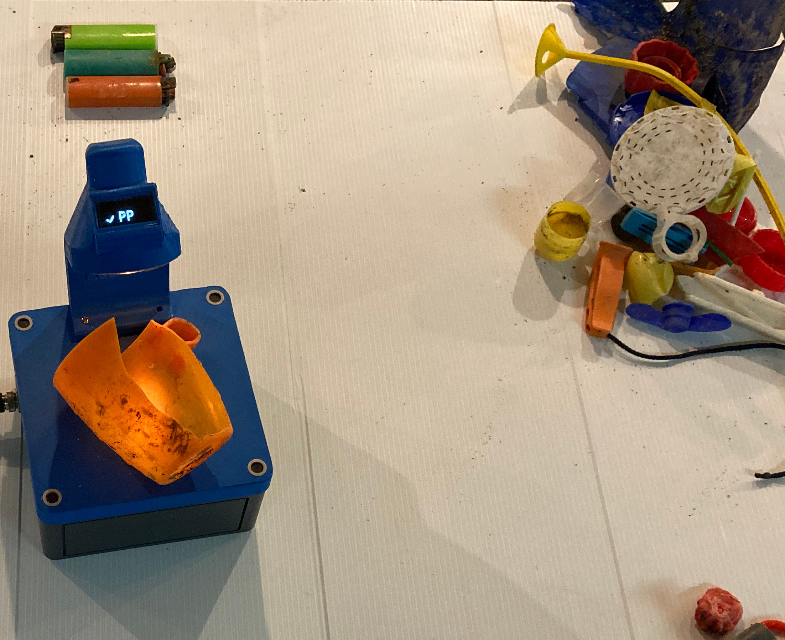
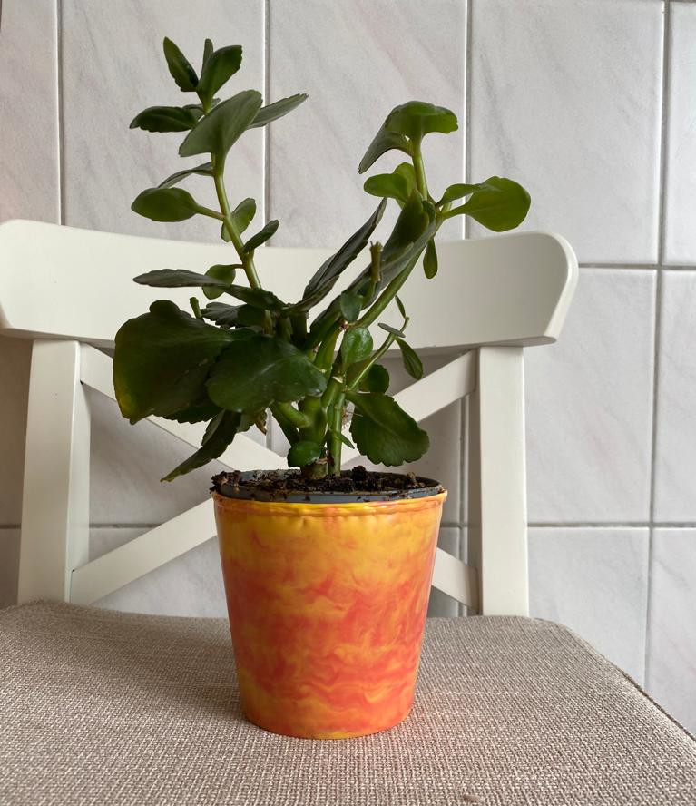

19. Recyceln und neu gestalten¶
Precious Plastic Léman PPL ist ein Verein, der sich aktiv für die Wiederverwendung und Reduzierung von Kunststoffabfällen in der Genferseeregion einsetzt. Die Mitglieder stellen neue Produkte her, indem sie die Kunststoffabfälle aus ihrer Werkstatt in Lausanne umwandeln.
Als Designer und Verarbeiter verbringen die Mitglieder von PPL mehr Zeit in der Werkstatt als draußen mit dem Sammeln von Abfallobjekten aus Plastik. PPL erhält in erster Linie gebrauchte Kunststoffe aus Spenden, die am Arbeitsplatz abgegeben werden. In Bezug auf die Abfallobjekte am Strand hatten die Mitglieder von PPL zwei Fragen, die sie beantworten wollten:
Wie viel des gesammelten Plastikmülls könnte für den Betrieb von PPL verwendet werden?
Was genau wäre erforderlich, um die an der Küste gesammelten Kunststoffe zu recyceln?
Die Mitglieder von PPL waren für drei Untersuchungsstandorte am Lac Léman verantwortlich und sammelten von April 2020 - Mai 2021 Proben. Die Umwandlung von gebrauchten Kunststoffen in neue Produkte ist ein mehrstufiger Prozess. Sobald die Gegenstände gesammelt wurden, müssen sie sortiert, gereinigt, zu Granulat verarbeitet und dann spritzgegossen werden. Beachten Sie, dass die Gesamtmengen und Prozentsätze der identifizierten Gegenstände, die im Folgenden erörtert werden, alle aufgezeichneten Daten aus dem IQAALS-Projekt sind, mit Ausnahme der Alpen und des Jura.
19.1. Sortieren¶
Verschiedene Arten von Kunststoffen haben unterschiedliche Eigenschaften. PPL achtet darauf, dass bei der Verarbeitung und Herstellung von Produkten keine Kunststoffarten vermischt werden. Bei Gegenständen, bei denen die Art des Kunststoffs nicht eindeutig angegeben ist, verwendet PPL die FTIR-Technologie zur Unterscheidung der Kunststoffarten.
Unten: Identifizierung von Kunststoffen aus Strand-Abfallaufkommen Untersuchungen
{kind=link}
Bei einer Strand-Abfallaufkommen Untersuchung stößt man auf eine Vielzahl von Kunststoffen. Nicht alles davon kann in Produkte mit Mehrwert umgewandelt werden. Durch die Identifizierung und Gruppierung der Kunststoffe nach ihrer Art kann PPL Objekte herstellen, die am besten zu den Eigenschaften des verwendeten Kunststoffs passen.
19.1.1. Polyethylenterephthalat (PET)¶
Das meiste PET, das während des Probenahmezeitraums gefunden wurde, war in Form von Getränkeflaschen und Lebensmittelbehältern. Der größte Teil der weltweiten Produktion von PET wird jedoch zur Herstellung von Fasern verwendet. PET ist für das derzeitige Herstellungsverfahren bei PPL nicht gut geeignet und wird daher nicht verwendet.
Nur 88 PET-Getränkeflaschen wurden in den Jahren 2020-2021 landesweit entlang der Datenerhebungen des Wassersystems erfasst.
19.1.2. Polyethylen hoher Dichte (HDPE2)¶
HDPE2 hat ein hohes Verhältnis von Festigkeit zu Dichte und funktioniert gut im PPL-System. HDPE2 hat die Form vieler Gegenstände, die bei Datenerhebungen identifiziert wurden:
Flaschendeckel
bestimmte Getränkebehälter
Behälter für Reinigungsmittel und Chemikalien
Spielzeug
Zusammengenommen hätten mindestens 4% aller Gegenstände als HDPE klassifiziert werden können. Aus diesen Gegenständen stellt PPL Schlüsselanhänger, Blumentöpfe und Karabiner her.
19.1.3. Polyvinylchlorid (PVC3)¶
PVC3 ist ein gängiges Material für Kunststoffe im Bauwesen. Baukunststoffe gehören zu den am häufigsten verwendeten Gegenständen am Lac Léman und im ganzen Land. Leider ist dieses Produkt bei unsachgemäßer Handhabung giftig. PPL recycelt dieses Material nicht.
Bauabfälle aus Kunststoff wurden in 52% aller Proben identifiziert und waren mindestens 2% aller identifizierten Objekte.
19.1.4. Polyethylen niedriger Dichte (LDPE4)¶
LDPE4 wird in der Regel nicht recycelt, da es entweder nicht gekennzeichnet oder sehr schwer zu reinigen ist. LDPE4 wird oft unter Industriefolien oder Dünnschicht-Plastiksäcken eingeordnet.
Industriefilme wurden in 69 % aller Proben gefunden und waren mindestens 4% aller identifizierten Objekte.
19.1.5. 21.1.5. Polypropylen (PP5)¶
PP5 nimmt verschiedene Formen an, wenn es am Strand gefunden wird. PP5 kann in Chipstüten, Eimern, Medizinflaschen, Strohhalmen und Kunststoffseilen verwendet werden.
PPL hat viele Verwendungsmöglichkeiten für PP5 gefunden, darunter Töpfe, Wanduhren, Frisbees und Schlüsselanhänger.
PP5 rPP5 steht für eine große Gruppe von Abfallobjekten am Strand, kombiniert mit fragmentierten Kunststoffen PPL steht für \(\approxeq\) 30-40% aller gefundenen Objekte und wurde in 98% der Datenerhebungen identifiziert.
19.1.6. Polystyrol (PS6)¶
PS6 wurde bei fast allen Proben entweder in extrudiertem oder geschäumtem Kunststoff gefunden. PS6 kann von PPL zu starren Platten recycelt werden, die eine feine Politur erhalten. Dazu werden zwei Arten von Polystyrol verwendet: expandiert und extrudiert.
Expandiertes und extrudiertes Polystyrol wurde in 68% bzw. 53% aller Proben identifiziert. Zusammengenommen sind sie für mindestens 13% aller identifizierten Objekte verantwortlich.
19.1.7. Acrylnitril-Butadien-Styrol (ABS)¶
ABS ist leicht und kann spritzgegossen oder extrudiert werden. PPL verwendet ABS und hochschlagfestes Polystyrol (HIPS) zur Herstellung von starren, recycelten Platten.
ABS wird bei der Inventarisierung mit den Konstruktionskunststoffen mitgerechnet
19.2. Reinigung¶
Bei der Probenahme gesammelte Objekte

Sobald die Objekte identifiziert und sortiert sind, müssen sie gereinigt werden, bevor eine Umwandlung erfolgen kann. PPL verwendete eine Kombination aus Backpulver und Essig mit Wasser, um Schlamm und Schmutz von den am Strand gesammelten Objekten zu entfernen.
Probenmaterial schrubben und einweichen

Nach einer Einweichzeit von 12 Stunden werden die Objekte von Hand gebürstet und zum Trocknen ausgelegt.

19.3. Transformieren¶
Die gereinigten, sortierten und getrockneten Kunststoffe werden zu Granulat zerkleinert, das im Spritzgussverfahren verarbeitet wird.
Zu Granulat verarbeitete Kunststoffe für die Produktion

19.4. Herstellung¶
PP5 und HDPE2 sind die am häufigsten vorkommenden Objekte aus den Abfallobjekten und funktionieren gut mit dem PPL-System. Aus den Kunststoffen am Lac Léman wurden zwei Arten von Produkten hergestellt.
Carabiniers

Flower pots
{kind=link}
19.5. Diskussion¶
In der Mehrzahl der gesammelten Proben wurden wiederverwendbare Kunststoffe gefunden. Polypropylen, HDPE, PS6 und LDPE waren die wichtigsten identifizierten Polymere. Fragmentierte Kunststoffe, Schaumstoffe und Flaschenverschlüsse können alle vor Ort mit den bei Precious Plastic angewandten Methoden recycelt werden.
Die weggeworfenen Gegenstände erforderten einen wesentlich höheren Reinigungsaufwand als das Material, an das PPL gewöhnt ist. Die Reinigung von gebrauchten Kunststoffprodukten ist ein großer Kostenfaktor in der Recyclingindustrie, und PPL ist da keine Ausnahme. Große Recyclinganlagen verfügen über Wasseraufbereitungsanlagen, um die Reinigungsmittel und Verunreinigungen zu entfernen, die beim Reinigungsprozess entstehen. PPL verwendet Backpulver und Essig, wodurch die Gesamtmenge an Wasser reduziert und die Verwendung von Reinigungsmitteln, die sich negativ auf die Umwelt auswirken können, vermieden wird. Diese Methode eignet sich für sehr kleine Produktionsmengen, ist aber arbeitsaufwändig.
Solange die Reinigungs- und Sortierprozesse ordnungsgemäß durchgeführt wurden, gab es keine Qualitätseinbußen bei den hergestellten Produkten. Die Anzahl der Kunststoffe, die bei der Sammlung von Abfallobjekten gesammelt und in Produkte mit Mehrwert umgewandelt werden können, reicht nicht aus, um irgendeine Art von Produktionskapazität aufrechtzuerhalten. Es gibt jedoch eine Fülle von recycelbaren Kunststoffen, die in die Umwelt gelangen.
Das Vorhandensein von leicht wiederverwertbaren Produkten im Wasser bedeutet, dass Gelegenheiten verpasst werden, diese Ressource wertzuschätzen und/oder zu sammeln. Zusammen mit der Vielzahl von Gegenständen, die aus PP5 hergestellt sind, macht die geschätzte Anzahl der am Strand gesammelten wiederverwertbaren Gegenstände 40-50% der Gesamtmenge der gesammelten Gegenstände aus.
Diese Ergebnisse sind nicht spezifisch für eine bestimmte Region und charakterisieren bis zu einem gewissen Grad die Situation in allen Erhebungsgebieten des IQAASL-Projekts.
Strand-Abfallaufkommen Untersuchung, PPl 2020.11.22 Walenstadt, Walensee